SECCIÓN 9D
SISTEMAS DE LIMPIAPARABRISAS/LAVAPARABRISAS
Precaución: Desconecte el cable negativo de la batería antes de desmontar o instalar cualquier unidad eléctrica o cuando exista la posibilidad de que una herramienta o equipo pueda entrar en contacto con bornes eléctricos expuestos. La desconexión de dicho cable ayudará a evitar lesiones personales y daños al vehículo. La llave de contacto debe estar en posición LOCK a menos que se indique lo contrario.
ESPECIFICACIONES
Especificaciones de apriete
| Aplicación | N•m | Lb-pie | Lb-pulg. |
| Tornillos del depósito de líquido del lavaparabrisas | 10 | - | 89 |
| Tuerca del varillaje del brazo limpiaparabrisas | 15 | 11 | - |
| Tuerca del brazo limpiaparabrisas | 22 | 16 | - |
| Tornillos del motor del limpiaparabrisas | 10 | - | 89 |
DIAGRAMAS DE ESQUEMAS Y DIRECCIONES
Sistema de lavado y limpieza del parabrisas
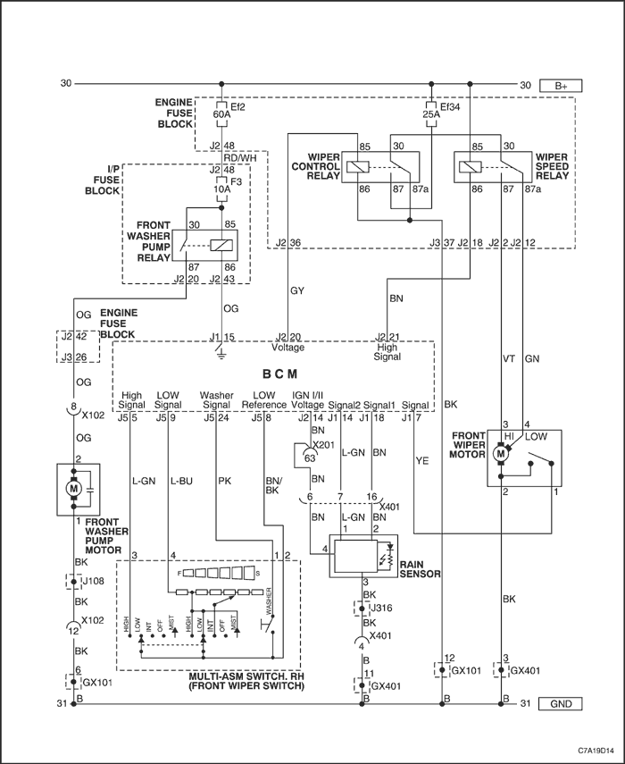


Sistema de limpiaparabrisas y lavaparabrisas de la puerta trasera levadiza
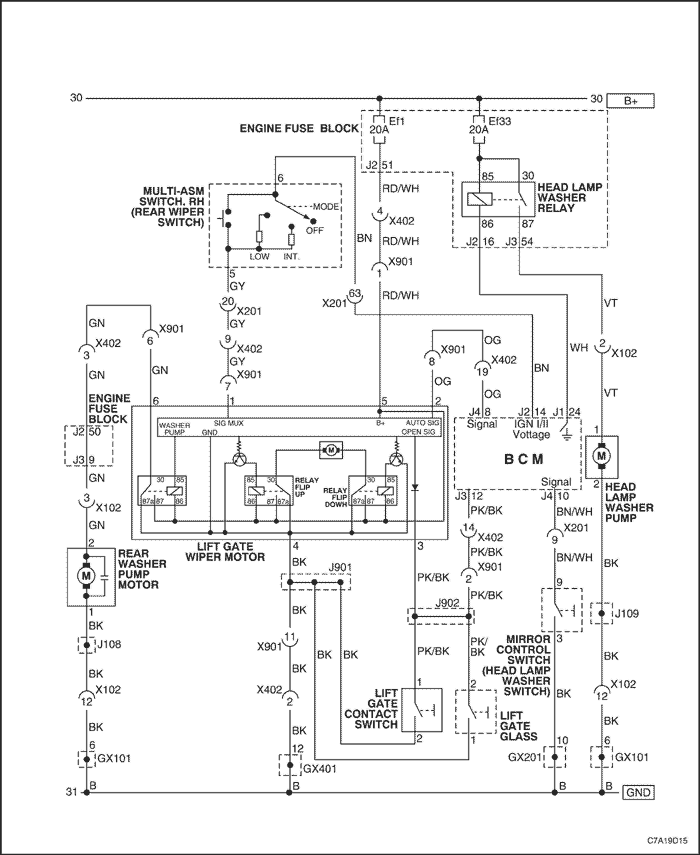
DIAGNÓSTICO
Síntomas - Sistemas de limpiaparabrisas y lavaparabrisas
Importante: Deben completarse los siguientes pasos antes de utilizar las tablas de síntomas.
- Realice la Comprobación del sistema de diagnóstico del vehículo de la Sección 9V, Módulo de control de la carrocería. Mire la información sobre DTCs del vehículo antes de usar la tabla de síntomas para verificar que lo siguiente sea cierto:
- No se han activado DTCs.
- Los módulos de control pueden comunicarse a través del enlace de datos serie.
- Revise el funcionamiento del sistema para familiarizarse con las funciones del mismo. Consulte la Descripción y funcionamiento del sistema de limpiaparabrisas/lavaparabrisas de esta sección.
Inspección visual/física
- Compruebe si hay dispositivos añadidos tras la compra del vehículo que pudieran afectar al funcionamiento del sistema de limpiaparabrisas/lavaparabrisas. Compruebe los sistemas de accesorios añadidos tras la compra del vehículo.
- Compruebe que se pueda acceder o ver fácilmente los componentes del sistema para verificar si hay daños o anomalías obvias que pudieran causar el síntoma.
- Cerciórese de que funcionan todos los componentes mecánicos antes de realizar el diagnóstico de la parte eléctrica del sistema.
Fallos intermitentes
El cableado o las conexiones eléctricas defectuosas pueden ser la causa de fallos intermitentes. Consulte el apartado Comprobación de la presencia de fallos intermitentes y malas conexiones en la Sección 9A, Sistema de cableado de la carrocería.
Los lavaparabrisas no funcionan
| Paso | Medida | Valor(es) | Sí | No |
| 1 | ¿Se ha realizado la Comprobación del sistema de diagnóstico del vehículo? ¿Está fundido el fusible F17? | - | Vaya al Paso 2 | Compruebe el vehículo con el scanner. |
| 2 | Verifique si se es cierto que no funcionan los lavaparabrisas. ¿Funcionan los lavaparabrisas tal como se describe en Descripción y funcionamiento? | - | | Vaya al Paso 3 |
| 3 | - Gire la llave de contacto a la posición OFF.
- Desenchufe el conector del cableado de la bomba de líquido del lavaparabrisas.
- Conecte una lámpara de pruebas entre el circuito de control de la bomba del lavaparabrisas y una buena masa.
- Gire la llave de contacto a la posición ON, sin encender el motor.
- Accione el interruptor del lavaparabrisas delantero.
¿Se enciende la lámpara de pruebas? | - | Vaya al Paso 4 | Vaya al Paso 8 |
| 4 | - Conecte la lámpara de pruebas entre el circuito de control de la bomba del lavaparabrisas de la luneta trasera y una buena masa.
- Gire la llave de contacto a la posición ON, sin encender el motor.
- Accione el interruptor del lavaparabrisas trasero.
¿Se enciende la lámpara de pruebas? | - | Vaya al Paso 5 | Vaya al Paso 7 |
| 5 | - Conecte la lámpara de pruebas entre el circuito de control de la bomba del lavaparabrisas y el circuito de control de la bomba del lavaparabrisas de la luneta trasera en la bomba del lavaparabrisas.
- Gire la llave de contacto a la posición ON, sin encender el motor.
- Accione el interruptor del lavaparabrisas delantero.
¿Se enciende la lámpara de pruebas? | - | Vaya al Paso 9 | Vaya al Paso 6 |
| 6 | - Gire la llave de contacto a la posición OFF.
- Desenchufe el conector del cableado del interruptor del lavaparabrisas.
- Pruebe el circuito a masa del conector del cableado con una lámpara de pruebas conectada a la tensión positiva de la batería.
¿Se enciende la lámpara de pruebas? | - | Vaya al Paso 10 | Vaya al Paso 11 |
| 7 | - Gire la llave de contacto a la posición OFF.
- Desenchufe el conector del cableado del interruptor del lavaparabrisas.
- Compruebe si hay alguna interrupción o derivación a masa en el circuito de control de la bomba del lavaparabrisas de la luneta trasera.
¿Se ha encontrado y corregido la anomalía? | - | Vaya al Paso 14 | Vaya al Paso 10 |
| 8 | - Gire la llave de contacto a la posición OFF.
- Desenchufe el conector del cableado del interruptor del lavaparabrisas.
- Compruebe si hay alguna interrupción o derivación a masa en el circuito de control de la bomba del lavaparabrisas.
¿Se ha encontrado y corregido la anomalía? | - | Vaya al Paso 14 | Vaya al Paso 10 |
| 9 | Compruebe si hay malas conexiones en la bomba de líquido del lavaparabrisas. ¿Se ha encontrado y corregido la anomalía? | - | Vaya al Paso 14 | Vaya al Paso 12 |
| 10 | Compruebe si hay malas conexiones en el interruptor del lavaparabrisas. ¿Se ha encontrado y corregido la anomalía? | - | Vaya al Paso 14 | Vaya al Paso 13 |
| 11 | Repare la interrupción o alta resistencia en el circuito de conexión a masa. ¿Se ha realizado la reparación? | - | Vaya al Paso 14 | - |
| 12 | Sustituya la bomba de líquido del lavaparabrisas. ¿Se ha realizado la sustitución? | - | Vaya al Paso 14 | - |
| 13 | Sustituya el interruptor del limpia/lavaparabrisas. ¿Se ha realizado la sustitución? | - | Vaya al Paso 14 | - |
| 14 | Ponga en marcha el sistema para verificar la reparación. ¿Se ha corregido la anomalía? | - | Sistema OK | Vaya al Paso 2 |
Limpiaparabrisas siempre activados
| Paso | Medida | Valor(es) | Sí | No |
| 1 | ¿Se ha realizado la Comprobación del sistema de diagnóstico del vehículo? ¿Está fundido el fusible F17? | - | Vaya al Paso 2 | Compruebe el vehículo con el scanner. |
| 2 | - Gire la llave de contacto a la posición ON, sin encender el motor.
- Apague los interruptores de los limpia/lavaparabrisas delantero y trasero.
¿Se apagan los limpiaparabrisas? | - | | Vaya al Paso 3 |
| 3 | ¿Están siempre activados los limpiaparabrisas traseros? | - | Vaya al Paso 4 | Vaya al Paso 7 |
| 4 | - Los limpiaparabrisas traseros siempre están activados.
- Gire la llave de contacto a la posición OFF.
- Desconecte el relé del limpiaparabrisas trasero.
- Gire la llave de contacto a la posición ON, sin encender el motor.
¿Se apagan los limpiaparabrisas traseros? | - | Vaya al Paso 5 | Vaya al Paso 6 |
| 5 | - Gire la llave de contacto a la posición OFF.
- Conecte una lámpara de pruebas entre el circuito de control del relé del limpiaparabrisas trasero y el lado de tensión de los accesorios de dicho relé en los terminales del enchufe del relé.
- Gire la llave de contacto a la posición ON, sin encender el motor.
¿Se enciende la lámpara de pruebas? | - | Vaya al Paso 8 | Vaya al Paso 16 |
| 6 | Compruebe si hay algún cortocircuito con la tensión en el circuito de control del motor del limpiaparabrisas de la luneta trasera. ¿Se ha encontrado y corregido la anomalía? | - | Vaya al Paso 20 | Vaya al Paso 14 |
| 7 | - Los limpiaparabrisas delanteros siempre están activados.
- Gire la llave de contacto a la posición OFF.
- Desenchufe el conector del cableado del interruptor del lavaparabrisas.
- Gire la llave de contacto a la posición ON, sin encender el motor.
¿Se apagan los limpiaparabrisas delanteros? | - | Vaya al Paso 9 | Vaya al Paso 15 |
| 8 | - Gire la llave de contacto a la posición OFF.
- Desenchufe el conector J5 del cableado del módulo de control de la carrocería (BCM).
- Conecte una lámpara de pruebas entre el circuito de señal del interruptor del limpiaparabrisas trasero del conector del cableado y una buena masa.
- Gire la llave de contacto a la posición ON, sin encender el motor.
¿Se enciende la lámpara de pruebas? | - | Vaya al Paso 10 | Vaya al Paso 12 |
| 9 | Conecte una lámpara de pruebas entre el circuito de señal de retardo de impulsos del interruptor del limpiaparabrisas del conector del cableado y una buena masa. ¿Se enciende la lámpara de pruebas? | - | Vaya al Paso 11 | Vaya al Paso 13 |
| 10 | Compruebe si hay algún cortocircuito con la tensión en el circuito de señal del interruptor del limpiaparabrisas trasero. ¿Se ha encontrado y corregido la anomalía? | - | Vaya al Paso 20 | Vaya al Paso 13 |
| 11 | Compruebe si hay algún cortocircuito con la tensión en el circuito de retardo de impulsos del interruptor del limpiaparabrisas. ¿Se ha encontrado y corregido la anomalía? | - | Vaya al Paso 20 | Vaya al Paso 12 |
| 12 | Compruebe si hay malas conexiones en el BCM. ¿Se ha encontrado y corregido la anomalía? | - | Vaya al Paso 20 | Vaya al Paso 19 |
| 13 | Compruebe si hay malas conexiones en el interruptor del lavaparabrisas. ¿Se ha encontrado y corregido la anomalía? | - | Vaya al Paso 20 | Vaya al Paso 18 |
| 14 | Compruebe si hay malas conexiones en el motor del limpiaparabrisas trasero. ¿Se ha encontrado y corregido la anomalía? | - | Vaya al Paso 20 | Vaya al Paso 17 |
| 15 | Repare el cortocircuito con la tensión en los circuitos de alta o baja velocidad del motor del limpiaparabrisas trasero. ¿Se ha realizado la reparación? | - | Vaya al Paso 20 | - |
| 16 | Sustituya el relé del limpiaparabrisas trasero. ¿Se ha realizado la sustitución? | - | Vaya al Paso 20 | - |
| 17 | Sustituya el motor del limpiaparabrisas trasero. ¿Se ha realizado la sustitución? | - | Vaya al Paso 20 | - |
| 18 | Sustituya el interruptor del limpia/lavaparabrisas. ¿Se ha realizado la sustitución? | - | Vaya al Paso 20 | - |
| 19 | ¿Se ha realizado la sustitución? | - | Vaya al Paso 20 | - |
| 20 | Ponga en marcha el sistema para verificar la reparación. ¿Se ha corregido la anomalía? | - | Sistema OK | Vaya al Paso 2 |
Los limpiaparabrisas no funcionan - Uno o varios modos (limpiaparabrisas delanteros)
| Paso | Medida | Valor(es) | Sí | No |
| 1 | ¿Se ha realizado la Comprobación del sistema de diagnóstico del vehículo? | - | Vaya al Paso 2 | Compruebe el vehículo con el scanner. |
| 2 | - Gire la llave de contacto a la posición ON, sin encender el motor.
- Accione y ponga los interruptores de los limpiaparabrisas delanteros y traseros en todas las posiciones.
¿Funciona con normalidad el sistema de limpiaparabrisas? | - | | Vaya al Paso 3 |
| 3 | - Gire la llave de contacto a la posición OFF.
- Desenchufe el conector del interruptor del limpia/lavaparabrisas.
- Gire la llave de contacto a la posición ON, sin encender el motor.
- Pruebe el circuito de alimentación de tensión de los accesorios del conector del cableado con una lámpara de pruebas conectada a una buena masa.
¿Se enciende la lámpara de pruebas? | - | Vaya al Paso 4 | Vaya al Paso 5 |
| 4 | Compruebe si hay alguna mala conexión en el conector del cableado del interruptor del limpia/lavaparabrisas. ¿Se ha encontrado y corregido la anomalía? | - | Vaya al Paso 7 | Vaya al Paso 6 |
| 5 | Repare la interrupción o derivación a masa en el circuito de alimentación de tensión de los accesorios. ¿Se ha realizado la reparación? | - | Vaya al Paso 7 | - |
| 6 | Sustituya el interruptor del limpia/lavaparabrisas. ¿Se ha realizado la sustitución? | - | Vaya al Paso 7 | - |
| 7 | Ponga en marcha el sistema para verificar la reparación. ¿Se ha corregido la anomalía? | - | Sistema OK | Vaya al Paso 2 |
Los limpiaparabrisas no funcionan - Uno o varios modos (limpiaparabrisas delanteros)
Ayudas para el diagnóstico
El modo de lavado para este procedimiento de diagnóstico se define como el modo cuando el interruptor del limpiaparabrisas está apagado y sólo se ha activado el interruptor del lavaparabrisas. Cuando se activa el interruptor del lavaparabrisas estando el interruptor del limpiaparabrisas apagado, los limpiaparabrisas deberían dar 3-5 pasadas y luego quedarse en posición de reposo.
Descripción de la prueba
Los números siguientes hacen referencia a los pasos que aparecen en la tabla de diagnóstico:
- Este paso identifica qué funciones específicas del limpiaparabrisas no están operativas. Los limpiaparabrisas deben funcionar en todas las posiciones activas del interruptor del limpiaparabrisas. Cuando el interruptor del limpiaparabrisas está apagado y sólo se activa el interruptor del lavaparabrisas, los limpiaparabrisas deberían dar 3-5 pasadas y luego quedarse en posición de reposo.
- Este paso ayudará a identificar el circuito o componente específico que puede estar implicado en la avería. Cuando los modos de reposo y lavado no están operativos, y tampoco lo esté el modo intermitente, hay que sospechar del circuito de señal de desempañado/apagado/velocidad baja del interruptor del limpiaparabrisas y de los componentes asociados. Cuando los limpiaparabrisas funcionen en modo parado pero no lo hagan ni en modo intermitente ni de lavado, hay que sospechar del circuito de alimentación de tensión de los accesorios del relé del limpiaparabrisas delantero o de un componente asociado.
- Este paso se usa cuando los limpiaparabrisas no se mueven estando sólo activado el interruptor del lavaparabrisas.
- Este paso se usa cuando los limpiaparabrisas siguen funcionando en todos los modos de limpieza, pero no se detienen en la posición de reposo total. Si se da esta anomalía mientras se están accionando los limpiaparabrisas en modo intermitente, los limpiaparabrisas normalmente no regresarán a la posición de reposo total. En vez de eso, se detendrán en posiciones aleatorias sobre el parabrisas y entre las pasadas sincronizadas del limpiaparabrisas. O, si los limpiaparabrisas se están accionando en modo de velocidad alta o baja, éstos se detendrán en mitad de la pasada cuando se desactive el interruptor del limpiaparabrisas.
Los limpiaparabrisas no funcionan - Uno o varios modos (limpiaparabrisas delanteros)
| Paso | Medida | Valor(es) | Sí | No |
| 1 | ¿Se ha realizado la Comprobación del sistema de diagnóstico del vehículo? ¿Está fundido el fusible F17? | - | Vaya al Paso 2 | Compruebe el vehículo con el scanner. |
| 2 | - Gire la llave de contacto a la posición ON, sin encender el motor.
- Accione y ponga el interruptor del limpiaparabrisas en todas las posiciones.
- Apague el interruptor del limpiaparabrisas.
- Con dicho interruptor apagado, active el interruptor del lavaparabrisas delantero.
¿Funcionan correctamente los limpiaparabrisas? | - | | Vaya al Paso 3 |
| 3 | ¿Los limpiaparabrisas no funcionan en absoluto? | - | Vaya al Paso 10 | Vaya al Paso 4 |
| 4 | ¿No funcionan los limpiaparabrisas en ningún modo salvo a velocidad alta? | - | Vaya al Paso 11 | Vaya al Paso 5 |
| 5 | ¿No funcionan los limpiaparabrisas en modo intermitente? | - | Vaya al Paso 6 | Vaya al Paso 7 |
| 6 | Además del modo intermitente, ¿no funcionan los limpiaparabrisas en uno o los dos modos siguientes: | - | Vaya al Paso 17 | Vaya al Paso 14 |
| 7 | Importante: Cuando el modo del lavaparabrisas está activado con el interruptor del limpiaparabrisas activado, los limpiaparabrisas deberían dar 3-5 pasadas y luego quedarse en posición de reposo. ¿No funcionan los limpiaparabrisas sólo en modo de lavado? | - | Vaya al Paso 12 | Vaya al Paso 8 |
| 8 | ¿No funcionan los limpiaparabrisas sólo en modo de reposo? | - | Vaya al Paso 13 | Vaya al Paso 9 |
| 9 | Los limpiaparabrisas no funcionan sólo en modo de velocidad alta. - Desenchufe el conector del cableado del motor del limpiaparabrisas.
- Pruebe el circuito de velocidad alta del motor del limpiaparabrisas en el conector del cableado con una lámpara de pruebas conectada a masa.
- Accione y ponga el interruptor del limpiaparabrisas en la posición de velocidad alta.
¿Se enciende la lámpara de pruebas? | - | Vaya al Paso 24 | Vaya al Paso 22 |
| 10 | Los limpiaparabrisas no funcionan para nada. - Desenchufe el conector del cableado del motor del limpiaparabrisas.
- Pruebe el circuito de conexión a masa del motor del limpiaparabrisas con una lámpara de pruebas conectada a la tensión positiva de la batería.
¿Se enciende la lámpara de pruebas? | - | Vaya al Paso 16 | Vaya al Paso 29 |
| 11 | Los limpiaparabrisas funcionan sólo a velocidad alta. - Desenchufe el conector del cableado del motor del limpiaparabrisas.
- Pruebe el circuito de velocidad baja del motor del limpiaparabrisas en el conector del cableado con una lámpara de pruebas conectada a masa.
- Accione y ponga el interruptor del limpiaparabrisas en la posición de velocidad baja.
¿Se enciende la lámpara de pruebas? | - | Vaya al Paso 24 | Vaya al Paso 20 |
| 12 | Los limpiaparabrisas no funcionan sólo en modo de lavado. - Desenchufe el conector del cableado J5 5 del módulo de control de la carrocería (BCM).
- Pruebe el circuito de control de la bomba del lavaparabrisas en el conector del cableado con una lámpara de pruebas conectada a masa.
- Active el interruptor del limpiaparabrisas.
¿Se enciende la lámpara de pruebas? | - | Vaya al Paso 25 | Vaya al Paso 21 |
| 13 | Los limpiaparabrisas no funcionan sólo en modo de reposo. - Desenchufe el conector del cableado del motor del limpiaparabrisas.
- Compruebe la continuidad entre el circuito de señal de reposo del interruptor del motor del limpiaparabrisas y el circuito de conexión a masa de dicho motor, en las patillas de éste.
¿Hay continuidad? | - | Vaya al Paso 15 | Vaya al Paso 24 |
| 14 | Los limpiaparabrisas no funcionan sólo en modo intermitente. - Desenchufe el conector del cableado J5 5 del módulo de control de la carrocería (BCM).
- Pruebe el circuito de señal de retardo de impulsos del limpiaparabrisas en el conector del cableado con una lámpara de pruebas conectada a masa.
- Accione y ponga el interruptor del lavaparabrisas en todas las posiciones intermitentes.
¿Se enciende la lámpara de pruebas en todas las posiciones intermitentes? | - | Vaya al Paso 25 | Vaya al Paso 23 |
| 15 | - Enchufe el conector del cableado del motor del limpiaparabrisas.
- Desconecte el relé del limpiaparabrisas delantero.
- Pruebe el circuito de señal de reposo del interruptor del motor del limpiaparabrisas del bloque de fusibles debajo del capó con una lámpara de pruebas conectada a la tensión positiva de la batería.
¿Se enciende la lámpara de pruebas? | - | Vaya al Paso 33 | Vaya al Paso 30 |
| 16 | - Conecte la lámpara de pruebas entre masa y el circuito de velocidad alta del motor del limpiaparabrisas del conector del cableado.
- Accione y ponga el interruptor del limpiaparabrisas en la posición de velocidad alta.
- Conecte la lámpara de pruebas entre masa y el circuito de velocidad baja del motor del limpiaparabrisas del conector del cableado.
- Accione y ponga el interruptor del limpiaparabrisas en la posición de velocidad baja.
¿Se enciende la lámpara de pruebas en las posiciones de velocidad alta y baja? | - | Vaya al Paso 24 | Vaya al Paso 26 |
| 17 | - Gire la llave de contacto a la posición OFF.
- Desconecte el relé del limpiaparabrisas delantero.
- Gire la llave de contacto a la posición ON, sin encender el motor.
- Pruebe los circuitos de alimentación de tensión de los accesorios del relé del limpiaparabrisas delantero, en el bloque de fusibles debajo del capó, con una lámpara de pruebas conectada a masa.
¿Se enciende la lámpara de pruebas? | - | Vaya al Paso 18 | Vaya al Paso 28 |
| 18 | - Gire la llave de contacto a la posición OFF.
- Conecte un puente con fusible de 3 amperios entre el circuito de alimentación de tensión de los accesorios y el circuito de señal de desempañado/apagado/velocidad baja del interruptor del limpiaparabrisas, en el bloque de fusibles debajo del motor.
- Gire la llave de contacto a la posición ON, sin encender el motor.
- Ponga el interruptor del limpiaparabrisas en la posición intermitente.
- Pruebe el circuito de señal de desempañado/apagado/velocidad baja del interruptor del limpiaparabrisas, en el terminal de dicho interruptor, con una lámpara de pruebas conectada a masa.
¿Se enciende la lámpara de pruebas? | - | Vaya al Paso 19 | Vaya al Paso 27 |
| 19 | Pruebe el circuito de velocidad baja del interruptor del limpiaparabrisas, en el terminal de dicho interruptor, con una lámpara de pruebas conectada a masa. ¿Se enciende la lámpara de pruebas? | - | Vaya al Paso 33 | Vaya al Paso 26 |
| 20 | Compruebe si el circuito de velocidad baja del motor del limpiaparabrisas está abierto. ¿Se ha encontrado y corregido la anomalía? | - | Vaya al Paso 35 | Vaya al Paso 26 |
| 21 | Compruebe si el circuito de control de la bomba del lavaparabrisas está abierto. ¿Se ha encontrado y corregido la anomalía? | - | Vaya al Paso 35 | Vaya al Paso 26 |
| 22 | Compruebe si el circuito de velocidad alta del motor del limpiaparabrisas está abierto. ¿Se ha encontrado y corregido la anomalía? | - | Vaya al Paso 35 | Vaya al Paso 26 |
| 23 | Compruebe si el circuito de retardo de impulsos del interruptor del limpiaparabrisas está abierto. ¿Se ha encontrado y corregido la anomalía? | - | Vaya al Paso 35 | Vaya al Paso 26 |
| 24 | Compruebe si hay alguna mala conexión en el conector del cableado del motor del limpiaparabrisas. ¿Se ha encontrado y corregido la anomalía? | - | Vaya al Paso 35 | Vaya al Paso 32 |
| 25 | Compruebe si hay alguna mala conexión en el conector del cableado del módulo de control de la carrocería (BCM). ¿Se ha encontrado y corregido la anomalía? | - | Vaya al Paso 35 | Vaya al Paso 34 |
| 26 | Compruebe si hay alguna mala conexión en el conector del cableado del interruptor del limpia/lavaparabrisas. ¿Se ha encontrado y corregido la anomalía? | - | Vaya al Paso 35 | Vaya al Paso 31 |
| 27 | Repare la interrupción o resistencia alta en el circuito del interruptor del limpiaparabrisas. ¿Se ha realizado la reparación? | - | Vaya al Paso 35 | - |
| 28 | Repare la interrupción o resistencia alta en el circuito de alimentación de tensión de los accesorios. ¿Se ha realizado la reparación? | - | Vaya al Paso 35 | - |
| 29 | Repare el circuito de conexión a masa abierto. ¿Se ha realizado la reparación? | - | Vaya al Paso 35 | - |
| 30 | Repare la interrupción o resistencia alta en el circuito de señal de reposo del interruptor del motor del limpiaparabrisas. ¿Se ha realizado la reparación? | - | Vaya al Paso 35 | - |
| 31 | Sustituya el interruptor del limpia/lavaparabrisas. ¿Se ha realizado la sustitución? | - | Vaya al Paso 35 | - |
| 32 | Sustituya el motor del limpiaparabrisas. ¿Se ha realizado la sustitución? | - | Vaya al Paso 35 | - |
| 33 | Sustituya el relé del limpiaparabrisas delantero. ¿Se ha realizado la sustitución? | - | Vaya al Paso 35 | - |
| 34 | Sustituya el BCM. Consulte la Sección 9V, Módulo de control de la carrocería. ¿Se ha realizado la sustitución? | - | Vaya al Paso 35 | - |
| 35 | Ponga en marcha el sistema para verificar la reparación. ¿Se ha corregido la anomalía? | - | Sistema OK | Vaya al Paso 2 |
Los limpiaparabrisas no funcionan - Uno o varios modos (limpiaparabrisas traseros)
Ayudas para el diagnóstico
Salvo cuando está en modo de lavado, el limpiaparabrisas de la luneta trasera limpia ésta a intervalos de retardo. Con el sistema del limpiaparabrisas trasero activado, el intervalo de tiempo entre pasadas puede ajustarse seleccionando cualquiera de las tres velocidades de retardo del limpiaparabrisas.
Durante el modo de lavado, si se activa momentáneamente el interruptor del limpiaparabrisas, el limpiaparabrisas trasero dará 3-5 pasadas en la luneta trasera y luego se quedará en posición de reposo. Sin embargo, si se mantiene encendido el interruptor del limpiaparabrisas trasero, los limpiaparabrisas de la luneta trasera seguirán funcionando hasta que se desactive el interruptor.
Si bien la velocidad de retardo para los limpiaparabrisas trasero y delantero se ajusta y selecciona en el interruptor del limpiaparabrisas, los intervalos de retardo del limpiaparabrisas trasero no van sincronizados con los del limpiaparabrisas delantero.
El limpiaparabrisas trasero debería detenerse en la posición de reposo siempre que el mismo no esté funcionando. No obstante, si se gira la llave de contacto a la posición OFF con el limpiaparabrisas trasero funcionando, éste se parará justo donde se encuentre en ese momento.
Descripción de la prueba
Los números siguientes hacen referencia a los pasos que aparecen en la tabla de diagnóstico.
- Este paso determinará si el limpiaparabrisas trasero funciona correctamente cuando sólo está activado el interruptor del lavaparabrisas de la luneta trasera. Cuando se acciona el interruptor del lavaparabrisas de la luneta trasera estando el interruptor del limpiaparabrisas trasero apagado, éste debería dar 3-5 pasadas y luego quedarse en posición de reposo.
- Este paso ayuda a identificar la avería específica. Es posible que lo único que funcione mal sea el modo de reposo del limpiaparabrisas de la luneta trasera. Cuando el interruptor del limpiaparabrisas trasero esté activado, dicho limpiaparabrisas debería pararse en la posición de reposo entre las pasadas sincronizadas del limpiaparabrisas. Cuando el interruptor del limpiaparabrisas trasero esté desactivado, dicho limpiaparabrisas debería pararse y mantenerse en la posición de reposo hasta que vuelva a accionarse el modo de lavado o limpieza.
Los limpiaparabrisas no funcionan - Uno o varios modos (limpiaparabrisas traseros)
| Paso | Medida | Valor(es) | Sí | No |
| 1 | ¿Se ha realizado la Comprobación del sistema de diagnóstico del vehículo? | - | Vaya al Paso 2 | Compruebe el vehículo con el scanner. |
| 2 | - Gire la llave de contacto a la posición ON, sin encender el motor.
- Active el interruptor del limpiaparabrisas de la luneta trasera.
¿Funciona el limpiaparabrisas de la luneta trasera? | - | Vaya al Paso 3 | Vaya al Paso 5 |
| 3 | - Apague el interruptor del limpiaparabrisas de la luneta trasera.
- Con dicho interruptor apagado, active el interruptor del lavaparabrisas de la luneta trasera.
¿Funciona el limpiaparabrisas de la luneta trasera? | - | Vaya al Paso 4 | Vaya al Paso 7 |
| 4 | Importante: A menos que el limpiaparabrisas de la luneta trasera se accione en modo de lavado, sólo funciona en los modos con retardo. Cuando el limpiaparabrisas trasero está encendido, debe detenerse en la posición de reposo entre las pasadas sincronizadas del limpiaparabrisas. Cuando el limpiaparabrisas trasero está apagado, debe detenerse y permanecer en la posición de reposo hasta que vuelva a accionarse el modo de limpieza o lavado. ¿Se para el limpiaparabrisas de la luneta trasera en la posición de reposo total como debería? | - | | Vaya al Paso 9 |
| 5 | Active el interruptor del limpiaparabrisas de la luneta trasera. ¿Funciona el limpiaparabrisas de la luneta trasera? | - | Vaya al Paso 8 | Vaya al Paso 6 |
| 6 | - Gire la llave de contacto a la posición OFF.
- Desmonte el relé del limpiaparabrisas trasero del bloque de fusibles debajo del capó.
- Gire la llave de contacto a la posición ON, sin encender el motor.
- Pruebe el circuito de alimentación de tensión de los accesorios en el lado del interruptor del relé, en el bloque de fusibles debajo del capó, con una lámpara de pruebas conectada a una buena masa.
¿Se enciende la lámpara de pruebas? | - | Vaya al Paso 10 | Vaya al Paso 20 |
| 7 | - Desenchufe el conector del cableado J2 14 del módulo de control electrónico del motor (ECM).
- Pruebe el circuito de control de la bomba del lavaparabrisas de la luneta trasera con una lámpara de pruebas conectada a masa.
- Active el interruptor del lavaparabrisas de la luneta trasera con el interruptor del limpiaparabrisas de la luneta trasera desactivado.
¿Se enciende la lámpara de pruebas? | - | Vaya al Paso 17 | Vaya al Paso 13 |
| 8 | - Desenchufe el conector del cableado J2 14 del módulo de control electrónico del motor (ECM).
- Pruebe el circuito de señal del interruptor del limpiaparabrisas trasero con una lámpara de pruebas conectada a masa.
- Active el interruptor del limpiaparabrisas de la luneta trasera.
¿Se enciende la lámpara de pruebas? | - | Vaya al Paso 17 | Vaya al Paso 14 |
| 9 | - Gire la llave de contacto a la posición OFF.
- Desenchufe el conector del cableado del motor del limpiaparabrisas de la luneta trasera.
- Gire la llave de contacto a la posición ON, sin encender el motor.
Pruebe el circuito de tensión de los accesorios del motor del limpiaparabrisas de la luneta trasera con una lámpara de pruebas conectada a una buena masa. | - | Vaya al Paso 16 | Vaya al Paso 19 |
| 10 | - Gire la llave de contacto a la posición OFF.
- Conecte un cable puente con fusible de 3 amperios entre el terminal del circuito de alimentación de tensión de los accesorios y el terminal del circuito de control del motor del limpiaparabrisas de la luneta trasera, en el bloque de fusibles debajo del motor.
- Gire la llave de contacto a la posición ON con el motor parado.
¿Funciona el limpiaparabrisas trasero? | - | Vaya al Paso 24 | Vaya al Paso 11 |
| 11 | - Asegúrese de que siga conectado el puente entre el terminal del circuito de alimentación de tensión de los accesorios y el terminal del circuito de control del motor del limpiaparabrisas de la luneta trasera.
- Pruebe el circuito de control del motor del limpiaparabrisas de la luneta trasera en dicho motor con una lámpara de pruebas conectada a una buena masa.
¿Se enciende la lámpara de pruebas? | - | Vaya al Paso 12 | Vaya al Paso 21 |
| 12 | Conecte la lámpara de pruebas entre los circuitos de control y de conexión a masa del motor del limpiaparabrisas de la luneta trasera. ¿Se enciende la lámpara de pruebas? | - | Vaya al Paso 16 | Vaya al Paso 18 |
| 13 | Compruebe si hay alguna interrupción o alta resistencia en el circuito de control de la bomba del lavaparabrisas de la luneta trasera. ¿Se ha encontrado y corregido la anomalía? | - | Vaya al Paso 26 | Vaya al Paso 15 |
| 14 | Compruebe si hay alguna interrupción o resistencia alta en el circuito de señal del interruptor del limpiaparabrisas trasero. ¿Se ha encontrado y corregido la anomalía? | - | Vaya al Paso 26 | Vaya al Paso 15 |
| 15 | Compruebe si hay alguna mala conexión en el conector del cableado del interruptor del limpia/lavaparabrisas. ¿Se ha encontrado y corregido la anomalía? | - | Vaya al Paso 26 | Vaya al Paso 22 |
| 16 | Compruebe si hay alguna mala conexión en el conector del cableado del motor del limpiaparabrisas de la luneta trasera. ¿Se ha encontrado y corregido la anomalía? | - | Vaya al Paso 26 | Vaya al Paso 23 |
| 17 | Compruebe si hay malas conexiones en el conector del cableado del BCM. ¿Se ha encontrado y corregido la anomalía? | - | Vaya al Paso 26 | Vaya al Paso 25 |
| 18 | Repare la interrupción o resistencia alta en el circuito de conexión a masa del motor del limpiaparabrisas de la luneta trasera. ¿Se ha realizado la reparación? | - | Vaya al Paso 26 | - |
| 19 | Repare la interrupción o alta resistencia en el circuito de tensión de los accesorios, entre el empalme del relé del limpiaparabrisas trasero y el motor del limpiaparabrisas. ¿Se ha realizado la reparación? | - | Vaya al Paso 26 | - |
| 20 | Repare la interrupción o alta resistencia en el circuito de alimentación de tensión de los accesorios. ¿Se ha realizado la reparación? | - | Vaya al Paso 26 | - |
| 21 | Repare la interrupción o alta resistencia en el circuito de control del motor del limpiaparabrisas de la luneta trasera. ¿Se ha realizado la reparación? | - | Vaya al Paso 26 | - |
| 22 | Sustituya el interruptor del limpia/lavaparabrisas. ¿Se ha realizado la sustitución? | - | Vaya al Paso 26 | - |
| 23 | Sustituya el motor del brazo de limpieza de la luna trasera. ¿Se ha realizado la sustitución? | - | Vaya al Paso 26 | - |
| 24 | Sustituya el relé del limpiaparabrisas trasero. ¿Se ha realizado la sustitución? | - | Vaya al Paso 26 | - |
| 25 | ¿Se ha encontrado y corregido la anomalía? | - | Vaya al Paso 26 | - |
| 26 | Ponga en marcha el sistema para verificar la reparación. ¿Se ha corregido la anomalía? | - | Sistema OK | Vaya al Paso 2 |
MANTENIMIENTO Y REPARACIÓN
servicio con vehículo en marcha
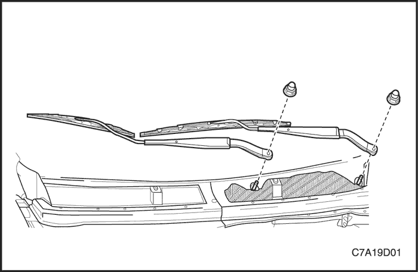
Brazo del limpiaparabrisas
Procedimiento de desmontaje
- Abra el capó.
- Quite las tuercas para acceder a la tuerca del brazo limpiaparabrisas desde éste.
- Levante y separe el conjunto del brazo limpiaparabrisas del parabrisas y desmonte el brazo del eje del pivote.
procedimiento de montaje
- Monte el brazo limpiaparabrisas.
Aviso: Metales distintos en contacto directo pueden corroerse rápidamente. Asegúrese de utilizar los elementos de sujeción correctos para evitar una corrosión prematura.
- Sujete el brazo limpiaparabrisas con su tuerca.
Apretar
Apriete la tuerca del brazo limpiaparabrisas hasta 22 N•m (16 lb-pie).
- Accione los limpiaparabrisas y compruebe si funcionan bien.
- Cierre el capó.

Módulo del limpiaparabrisas
Procedimiento de desmontaje
- Desconecte el cable negativo de la batería.
- Quite los tornillos y retire la parte izquierda de la rejilla de entrada de aire. Consulte la Sección 9R, Parte delantera de la carrocería.
- Quite los tornillos del motor del limpiaparabrisas.
- Desmonte, haciendo palanca, el varillaje del brazo limpiaparabrisas del eje de accionamiento del motor.
- Desenchufe el conector eléctrico del módulo del limpiaparabrisas en el motor.

- Quite los tornillos y desmonte el motor del limpiaparabrisas.
procedimiento de montaje
Aviso: Metales distintos en contacto directo pueden corroerse rápidamente. Asegúrese de utilizar los elementos de sujeción correctos para evitar una corrosión prematura.
- Monte el motor del limpiaparabrisas con sus tornillos.
Apretar
Apriete los tornillos del motor del limpiaparabrisas hasta 4 N•m (35 lb-pulg.).
- Enchufe el conector eléctrico.
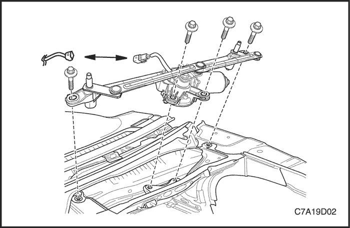
- Presione el varillaje del brazo limpiaparabrisas sobre el eje de accionamiento del motor.
- Monte el varillaje del brazo limpiaparabrisas en el eje de accionamiento del motor con sus tornillos.
Apretar
Apriete la tuerca del varillaje del brazo limpiaparabrisas hasta 10 N•m (89 lb-pie).
- Coloque la parte izquierda de la rejilla de entrada de aire.
- Conecte el cable negativo de la batería.
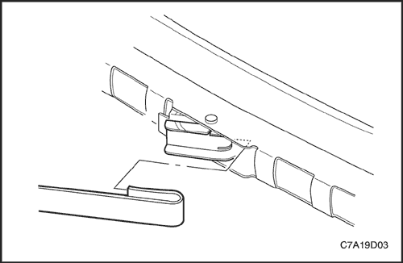
Escobilla del brazo limpiaparabrisas
Procedimiento de desmontaje
- Mueva el brazo limpiaparabrisas hasta la posición de servicio.
- Presione el clip de fijación de la escobilla del limpiaparabrisas y saque la escobilla del gancho del brazo limpiaparabrisas.
procedimiento de montaje
Aviso: Las escobillas del limpiaparabrisas del lado del conductor y del pasajero no tienen la misma longitud. Asegúrese de que la escobilla más larga se monta en el lado del conductor.
- Coloque el gancho del brazo limpiaparabrisas por la abertura de la escobilla.
- Presione el pivote de la escobilla en el gancho del brazo limpiaparabrisas hasta que el pivote quede bloqueado en el gancho.
- Accione los limpiaparabrisas y compruebe si funcionan bien.
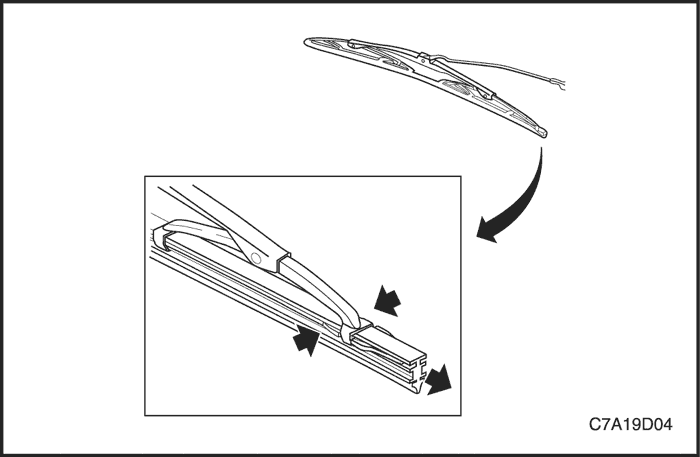
Elemento de la escobilla del limpiaparabrisas
Procedimiento de desmontaje
- Levante el brazo limpiaparabrisas hasta la posición de servicio.
- Desmonte el elemento de la escobilla del limpiaparabrisas apretando las lengüetas de metal y tirando del extremo del inserto en la garra del talón.
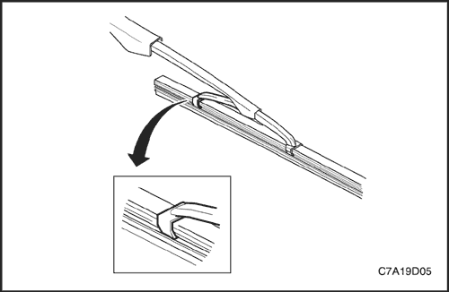
procedimiento de montaje
Aviso: Las escobillas del limpiaparabrisas del lado del conductor y del pasajero no tienen la misma longitud. Asegúrese de que la escobilla más larga se monta en el lado del conductor.
- Deslice el elemento de la escobilla del limpiaparabrisas en dicha escobilla, empezando por la garra del talón, de modo que la garra se enganche en la ranura del elemento de la escobilla.
- Guíe el elemento de la escobilla por los juegos de garras de la misma.
Aviso: Si el clip de metal del inserto de la escobilla no queda totalmente enganchado en la garra del talón, dicho inserto no estará suficientemente retenido, pudiendo dañarse el parabrisas.
- Presione el inserto de la escobilla de forma que las lengüetas de metal se enganchen totalmente en la garra del talón.
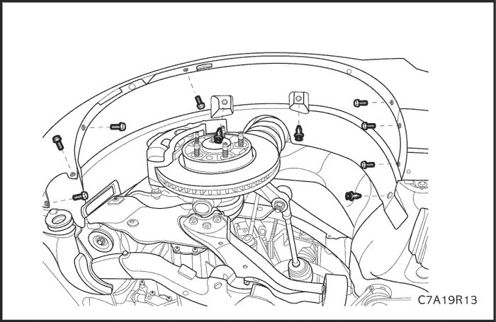
Depósito del lavaparabrisas
Procedimiento de desmontaje
- Desconecte el cable negativo de la batería.
- Desmonte la rueda delantera derecha. Consulte la Sección 2E, Neumáticos y ruedas.
- Desmonte el forro del paso de rueda delantero. Consulte la Sección 9R, Parte delantera de la carrocería.
- Desmonte el faro delantero.
- Desconecte el manguito del lavaparabrisas de la bomba.
- Desenchufe los conectores eléctricos.
- Quite los tornillos y desmonte el depósito.
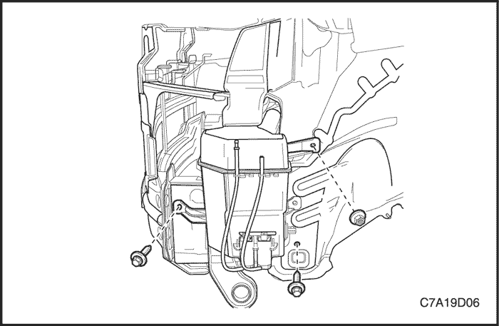
procedimiento de montaje
Aviso: Metales distintos en contacto directo pueden corroerse rápidamente. Asegúrese de utilizar los elementos de sujeción correctos para evitar una corrosión prematura.
- Monte el depósito con sus tornillos.
Apretar
Apriete los tornillos del depósito de líquido del lavaparabrisas hasta 10 N•m (89 lb-pulg.).
- Enchufe el conector eléctrico.
- Conecte el manguito a la bomba del lavaparabrisas.
- Monte el faro delantero.
- Monte el forro del paso de rueda delantero. Consulte la Sección 9R, Parte delantera de la carrocería.
- Monte la rueda delantera derecha. Consulte la Sección 2E, Neumáticos y ruedas.
- Conecte el cable negativo de la batería.
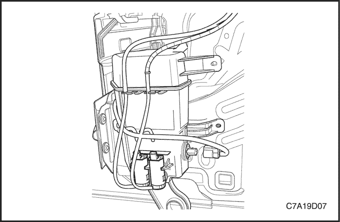
Bomba del lavaparabrisas
Procedimiento de desmontaje
- Desconecte el cable negativo de la batería.
- Desmonte la rueda delantera derecha. Consulte la Sección 2E, Neumáticos y ruedas.
- Desmonte la chapa guardabarros del paso de rueda delantera. Consulte la Sección 9R, Parte delantera de la carrocería.
- Desmonte el parachoques delantero. Consulte la Sección 9O, Parachoques y tableros.
- Desenchufe el conector eléctrico.
- Desconecte el manguito del lavaparabrisas de la bomba.
- Desmonte la bomba del lavaparabrisas.
procedimiento de montaje
- Monte la bomba del lavaparabrisas.
- Conecte el manguito a la bomba del lavaparabrisas.
- Enchufe el conector eléctrico.
- Monte el parachoques delantero. Consulte la Sección 9O, Parachoques y tableros.
- Monte la chapa guardabarros del paso de rueda delantera. Consulte la Sección 9R, Parte delantera de la carrocería.
- Monte la rueda delantera derecha. Consulte la Sección 2E, Neumáticos y ruedas.
- Conecte el cable negativo de la batería.
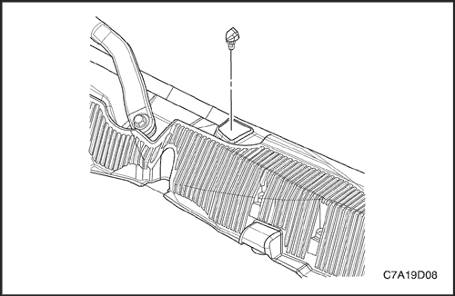
Boquillas de lavaparabrisas
Procedimiento de desmontaje
- Desmonte el panel de la rejilla de entrada de aire. Consulte la Sección 9R, Parte delantera de la carrocería.
- Presione las lengüetas de la tobera del lavaparabrisas para desenganchar la tobera de la rejilla de entrada de aire.
- Desmonte la tobera.
procedimiento de montaje
- Presione las toberas del lavaparabrisas sobre el panel de entrada de aire hasta que las lengüetas se enganchen con el panel.
- Monte el panel de la rejilla de entrada de aire. Consulte la Sección 9R, Parte delantera de la carrocería.
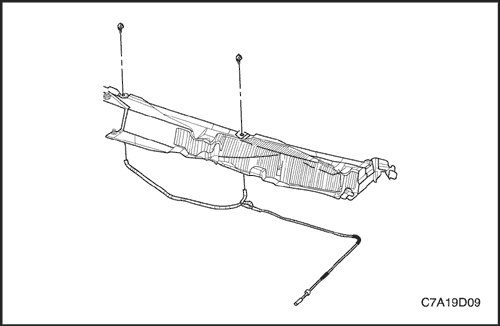
Mangueras de lavaparabrisas
Procedimiento de desmontaje
- Monte el panel de la rejilla de entrada de aire. Consulte la Sección 9R, Parte delantera de la carrocería.
- Separe el manguito de la tobera del manguito del recipiente de disolvente del lavaparabrisas que va por el carril del compartimento superior del motor.
- Retire el manguito de la tobera del lavaparabrisas delantero.
procedimiento de montaje
- Conecte el manguito de la tobera delantera al manguito del recipiente de disolvente del lavaparabrisas delantero que va por el carril del compartimento superior del motor.
- Coloque los manguitos del lavaparabrisas en el vehículo.
- Monte el panel de la rejilla de entrada de aire. Consulte la Sección 9R, Parte delantera de la carrocería.
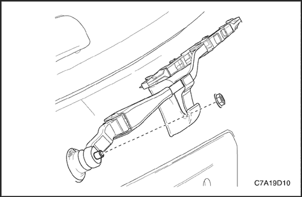
Brazo limpiaparabrisas trasero
Procedimiento de desmontaje
- Quite la tapa de acabado del brazo limpiaparabrisas trasero para dejar la tuerca al descubierto.
- Quite la tuerca del brazo limpiaparabrisas trasero.
- Levante y separe el conjunto del brazo limpiaparabrisas trasero de la luneta trasera y desmonte el limpiaparabrisas del eje del pivote.
procedimiento de montaje
- Coloque el conjunto de la escobilla del limpiaparabrisas sobre la tira de bloqueo tal como muestra la ilustración.
- Coloque la tuerca del brazo limpiaparabrisas trasero.
Apretar
Apriete la tuerca hasta 22 N•m (16 lb-pie).
- Coloque la tapa de acabado del brazo limpiaparabrisas trasero.
- Accione los limpiaparabrisas y compruebe si funcionan bien.
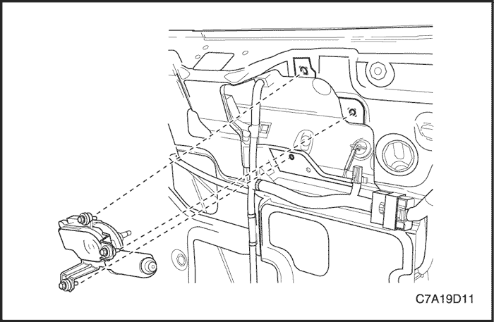
Motor del limpiaparabrisas trasero
Procedimiento de desmontaje
- Desmonte el brazo limpiaparabrisas trasero. Consulte "Brazo limpiaparabrisas trasero" en esta sección.
- Desmonte el guarnecido inferior de la puerta trasera levadiza. Consulte la Sección 9S, Parte trasera de la carrocería.
- Quite los tornillos del motor del limpiaparabrisas trasero.
- Desmonte el motor sacando el eje del pivote por el pasacables de la luneta trasera.
- Desenchufe el conector eléctrico.
procedimiento de montaje
- Enchufe el conector eléctrico.
- Monte el motor del limpiaparabrisas trasero por el pasacables de la luneta trasera.
- Coloque los tornillos del motor del limpiaparabrisas.
Apretar
Apriete los tornillos hasta 8 N•m (11 lb-pie).
- Monte el panel de guarnecido de la puerta trasera levadiza. Consulte la Sección 9S, Parte trasera de la carrocería.
- Monte el módulo del motor del limpiaparabrisas.
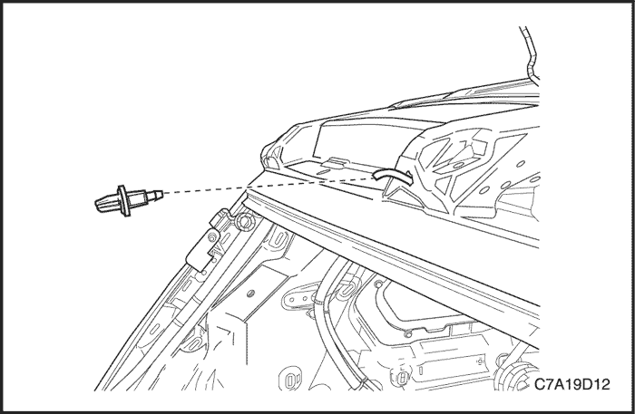
Toberas del limpiaparabrisas trasero
Procedimiento de desmontaje
- Desmonte el aplique superior de la puerta trasera levadiza. Consulte la Sección 9S, Parte trasera de la carrocería.
- Desmonte la tobera del limpiaparabrisas trasero.
procedimiento de montaje
- Monte la tobera del limpiaparabrisas trasero.
- Monte el aplique superior de la puerta trasera levadiza. Consulte la Sección 9S, Parte trasera de la carrocería.
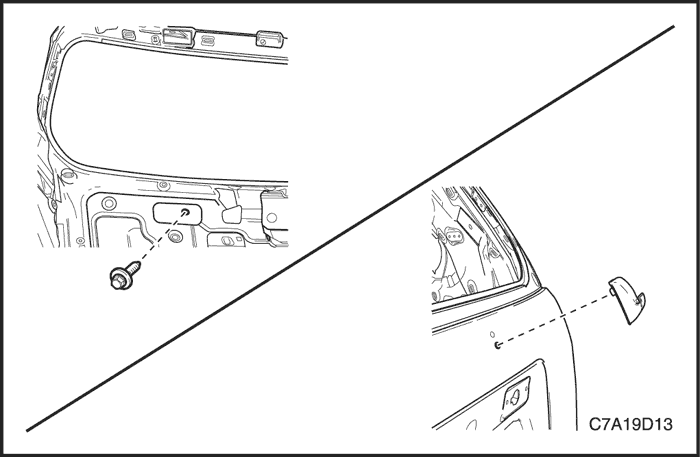
Reposo del brazo limpiaparabrisas trasero
Procedimiento de desmontaje
- Desmonte el aplique inferior de la puerta trasera levadiza. Consulte la Sección 9S, Parte trasera de la carrocería.
- Quite el tornillo y desmonte el reposo del brazo limpiaparabrisas trasero.
procedimiento de montaje
- Monte el reposo del brazo limpiaparabrisas trasero con su tornillo.
Apretar
Apriete el tornillo del reposo del brazo limpiaparabrisas trasero hasta 3 N•m (27 lb-pulg.).
- Monte el aplique inferior de la puerta trasera levadiza. Consulte la Sección 9S, Parte trasera de la carrocería.
DESCRIPCIÓN GENERAL Y FUNCIONAMIENTO DEL SISTEMA
Sistema de limpiaparabrisas
El sistema limpiaparabrisas está formado por un motor, un varillaje, un brazo, una escobilla y un interruptor del limpia/lavaparabrisas. El circuito del limpiaparabrisas incorpora un dispositivo automático de inmovilización que consta de un engranaje de tornillo sin fin y un plato de levas a fin de mantener el circuito activo temporalmente cuando se apague el interruptor. El sistema del limpiaparabrisas está accionado por un motor de imanes permanentes. El motor del limpiaparabrisas va montado en el tablero y está conectado directamente al varillaje del limpiaparabrisas.
Este motor dispone de dos velocidades, LO y HI (Baja y Alta), así como la posibilidad de un funcionamiento intermitente del brazo. El interruptor del limpiaparabrisas es parte integral del interruptor del sistema limpia/lavaparabrisas. El limpiaparabrisas se acciona a través de la palanca situada en el lado derecho de la columna de dirección.
Sistema de lavaparabrisas
El sistema lavaparabrisas está equipado con un depósito de líquido de lavado, una bomba, manguitos, toberas y un interruptor del limpia/lavaparabrisas. El depósito va montado detrás de la chapa guardabarros del paso de rueda delantero derecho. Una bomba fijada al depósito bombea el líquido a través de los manguitos a las dos toberas montadas en el capó. El interruptor del lavaparabrisas es parte integral del interruptor del sistema limpia/lavaparabrisas. El lavaparabrisas se acciona a través de la palanca situada en el lado derecho de la columna de dirección.